国自然瘤内菌研究新维度：单细胞技术助力解开生命奥秘
原文：https://mp.weixin.qq.com/s?__biz=MzAwMzIzOTk5OQ==&mid=2247525650&idx=5&sn=14198ddd67bcd2b5c68549b2ce70d880&chksm=9b3c1c42ac4b95545a767acdb1e80626415bc8dbb84b5c26806aa7b396a319b22b62ec991bc2#rd 合集：基金申报
导语 .
“脑肠轴”、“肝肠轴”、“肺肠轴”、“皮肠轴”等，关注微生物研究的经常会看到这些代表性名词，针对肠道菌群的抗生素与癌症患者更好的治疗效果相关，而细胞是组成器官的基本单位，细胞内低生物量微生物是否在肿瘤发病和进展中具有作用，却是一片未知。
2020年， Science 首次揭示肿瘤瘤内菌群的存在，随之 Nature 、 Cell 及其子刊上也不断报道瘤内菌群，使得瘤内菌群毫无疑问的成为新晋国自然热点，肿瘤内菌群与癌细胞密切接触，两者联合创新肿瘤研究新角度。
国自然宝典纸质版和视频回看可添加小寻领取：
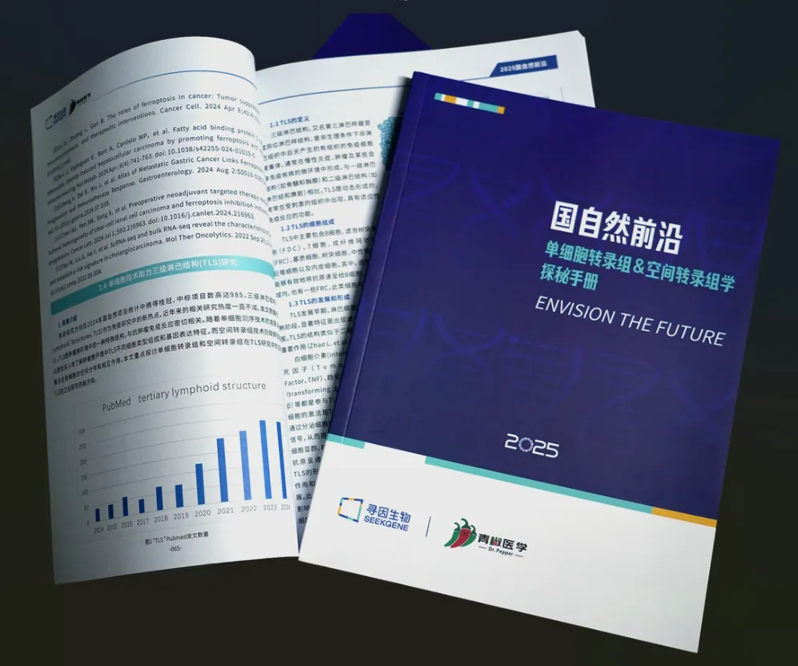

我是小寻
01
微生物在人体组织的分布打破常规认知
人体容纳着数万亿的微生物（如细菌、真菌、病毒和支原体）,目前的研究主要集中在细菌群落上。随着新一代测序(NGS)技术和非培养技术的出现，研究人员可以对微生物组分进行系统发育表征，并量化微生物群的多样性和丰度。在以前被认为是无菌的其他生态位，如肺、乳腺、肝脏、胰腺、前列腺和膀胱，也发现了低生物量的微生物种群。
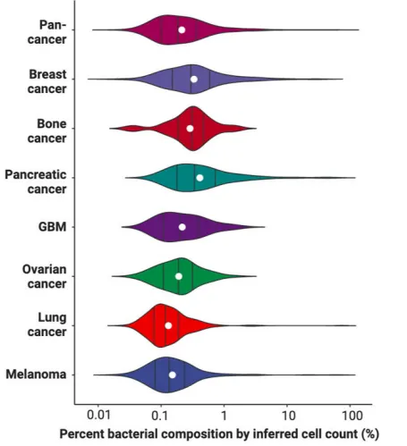
图1 不同组织细菌组成比例
02
宿主-微生物（细菌）的互作影响多种生理过程，是多种多因素疾病的条件
** **
人体微生物组成了一个复杂的多界群落，在多个身体部位与宿主共生互作，在健康的情况下，宿主与微生物共生，宿主提供营养丰富的微环境，微生物辅助消化和代谢。宿主-微生物的互作影响多种生理过程、是多种多因素疾病的条件。
细菌不仅影响自身的生态位，还影响宿主组织特异性和免疫细胞的功能，微生物成员可以在生态位之间多向共享；
随着技术的更新和科研的不断探索，尤其在肿瘤领域的研究发现细菌与肿瘤的发生发展密切相关，肿瘤内菌群与癌细胞密切接触，使得瘤内菌群毫无疑问的成为新晋研究热点。
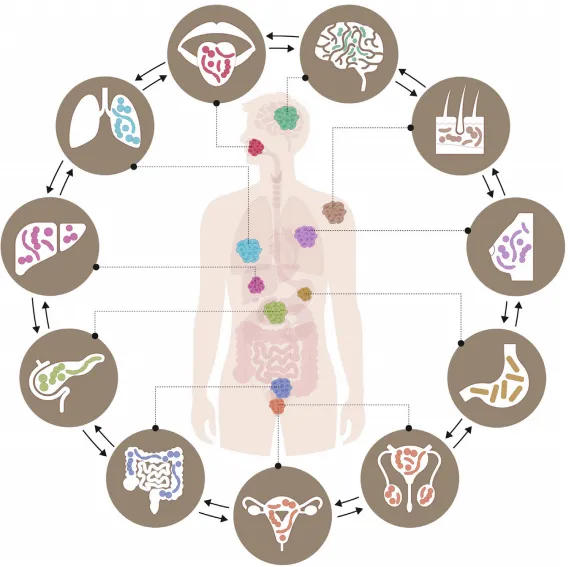
图2 微生物在不同生态位分布不同且在不同生态位之间多向共享
03
瘤内菌的发展历史和里程碑
回顾性总结了从公元前1550 年至今肿瘤内微生物群的八个关键研究里程碑。自2020年 Science 首次揭示肿瘤瘤内菌群的存在，随之 Nature 、 Cell 及其子刊上也不断报道瘤内菌群，越来越多的文章揭示了它们在肿瘤微环境和调节治疗结果中的重要性。
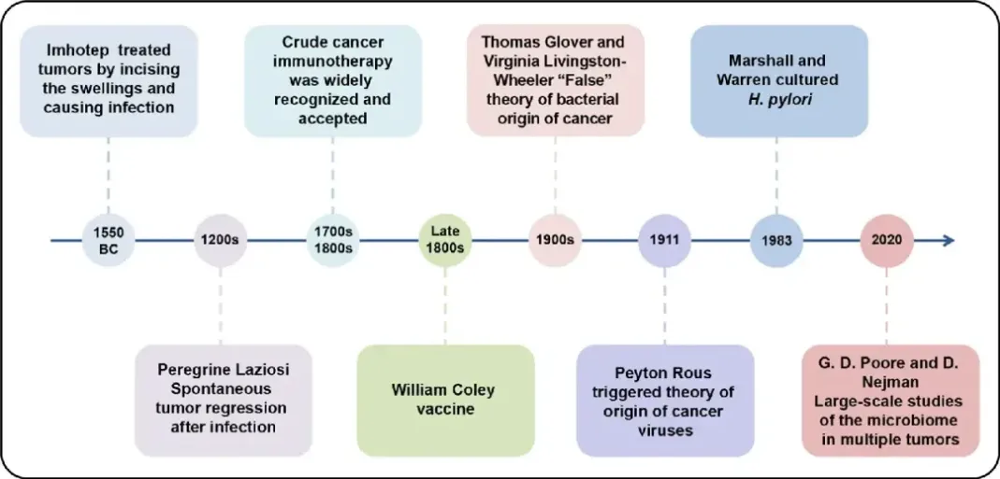
图3 瘤内菌发展重要里程碑
04
瘤内菌的多样性
研究发现，肿瘤内存在多种微生物来源，不同癌症类型的微生物组成是不同的，且微生物存在于肿瘤细胞和免疫细胞内。
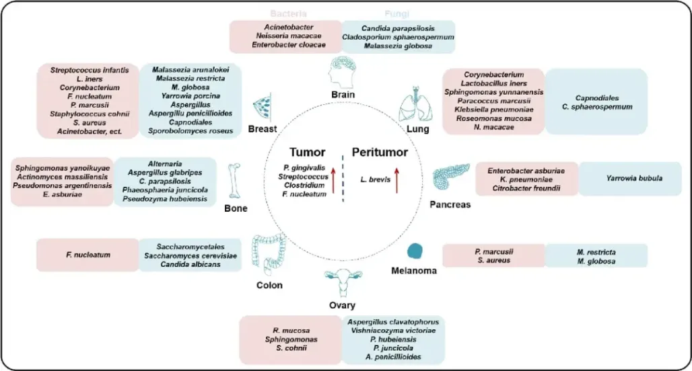
图4 瘤内菌多样性
05
瘤内菌的分布影响肿瘤异质性
标题： Effect of the intratumoral microbiota on spatial and cellular heterogeneity in cancer
日期： 2022年11月
期刊： Nature
IF： 50.5
方法： 16S rDNA测序、空间转录组、单细胞胞内菌检测
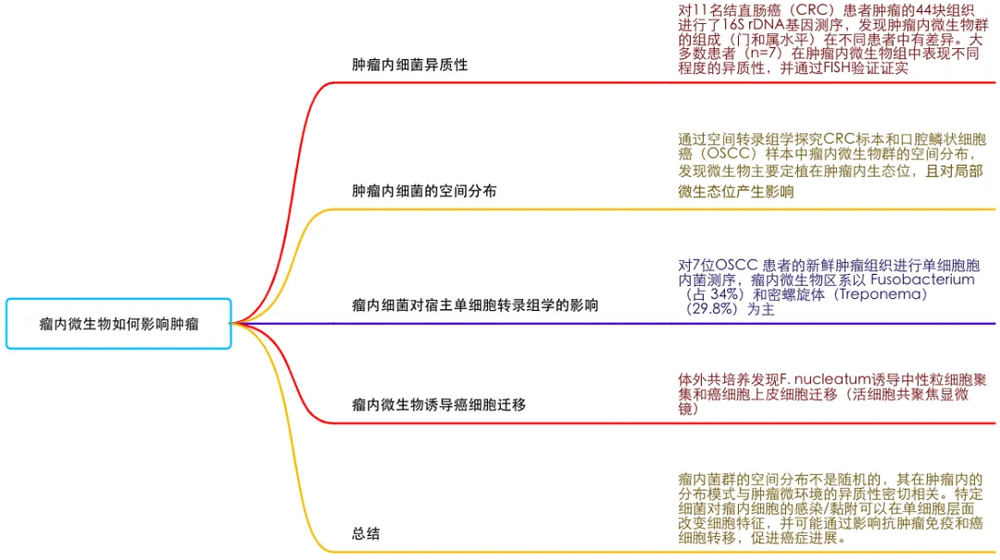
06
瘤内菌形成肿瘤微生物微环境影响肿瘤免疫微环境的状态
研究表明，除了肠道菌群外，微生物存在于肿瘤细胞和免疫细胞内，且细菌组成具有肿瘤类型特异性，揭示了肿瘤内微生物群与癌症之间的内在联系（如幽门螺杆菌通过外膜黏附素HopQ结合CEACAM的方式与胃上皮细胞结合，毒力因子CagA通过T4SS直接注入上皮细胞。CagA激活Wnt/β-catenin通路导致细胞转换和凋亡失调）。
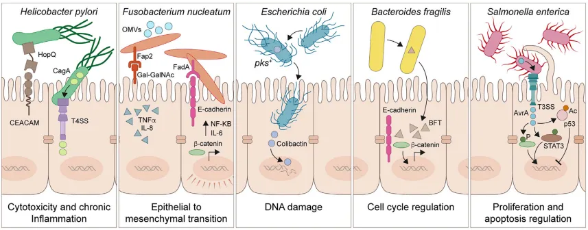
图5 上皮细胞中微生物对肿瘤形成过程的影响
此外，在癌细胞和肿瘤浸润性免疫细胞内可以观察到微生物的残留物及代谢物，（如DNA、RNA、脂肪酸和肌苷等），可以在肿瘤内积聚，并与癌细胞和免疫细胞上的受体结合。这些成分在肿瘤的发生、发展、转移和免疫反应中都发挥作用，由它们形成的微环境称为“肿瘤微生物微环境”，这些微生物可以影响肿瘤免疫微环境的状态，包括炎症介质，如组织驻留和外周招募的免疫细胞（髓样细胞、T细胞、B细胞和NK细胞）、纤维母细胞、内皮细胞、脂肪细胞和周细胞。
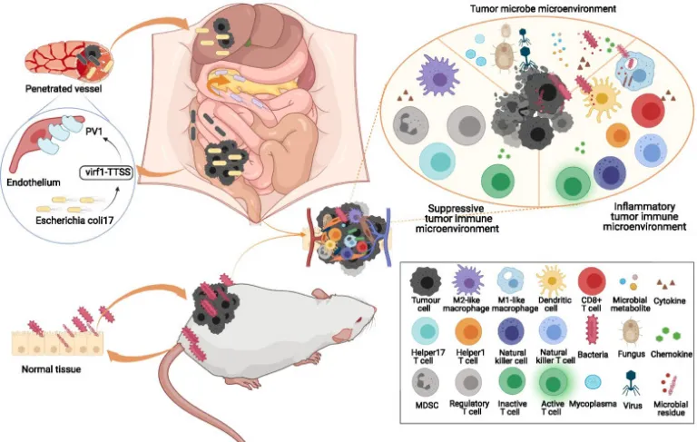
图6 肿瘤微生物微环境
07
瘤内菌通过多种途径影响癌症的肿瘤发生和恶性进展
多种接触依赖、非接触依赖、免疫机制驱动错综复杂的宿主-微生物相互作用，使得微生物组能够诱导癌症的调控。值得注意的是，单种微生物通过多效相互作用对肿瘤发生产生影响，这些相互作用可能是借助毒力因子的表达和分泌、物理结合诱导的信号、免疫细胞的招募等共同促进致癌影响。
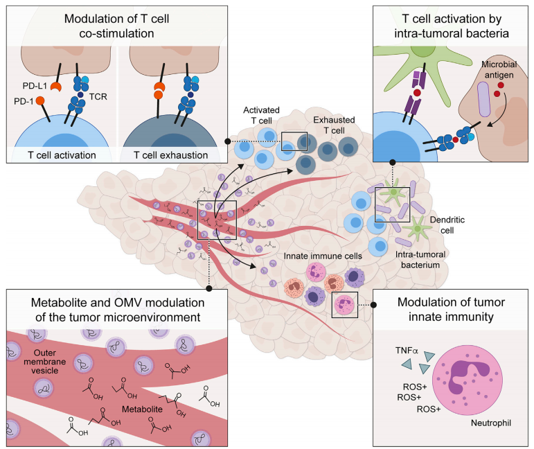
图7 瘤内菌影响肿瘤发生和恶性进展的途径
08
瘤内菌对肿瘤微环境的作用和相关致癌机理需要进一步探索
与对肠道菌群在癌症进展中的作用的理解相比，目前对肿瘤内菌群的理解仍处于起步阶段。与肠道菌群可通过代谢产物或与免疫细胞相互作用远程影响肿瘤组织不同，瘤内菌与癌细胞密切接触，因此可能具有不同的功能模式，对于瘤内菌需要投入更多的研究支持它们在肿瘤相关机理及治疗中的作用。
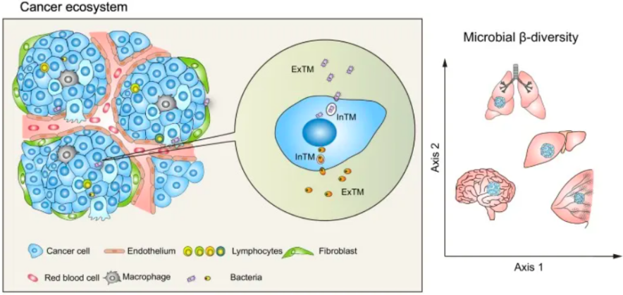
图8 肿瘤内菌群是癌症生态系统的组成部分
09
寻因创新性技术（单细胞胞内菌）
癌症患者中，90%死于复发或转移，多项临床数据表明，瘤内菌群和肿瘤菌群密切相关，瘤内微生物有望成为预后标志物。
寻因生物的单细胞5´转录组+胞内菌测序是基于SeekOne ® DD-油包水技术平台完成的，通过在油包水中加入16S的RT primer，凝胶微珠同时捕获宿主细胞基因及细菌16S，得到的cDNA分别用于构建建5’文库和16S文库。通过测序分析可以使我们更好的研究细胞内细菌的分布，为肿瘤相关机制机理的研究提供助力。
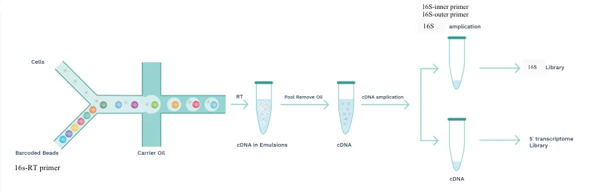

参考文献：
1: Jia-Hao Dai, Xi-Rong Tan, Han Qiao, Na Liu, Emerging clinical relevance of microbiome in cancer: promising biomarkers and therapeutic targets, Protein & Cell, Volume 15, Issue 4, April 2024, Pages 239–260.
2: Cullin, N., Azevedo Antunes, C., Straussman, R., Stein-Thoeringer, C. K., & Elinav, E. (2021). Microbiome and cancer. Cancer cell, 39(10), 1317–1341.
3: Sepich-Poore, G. D., Zitvogel, L., Straussman, R., Hasty, J., Wargo, J. A., & Knight, R. (2021). The microbiome and human cancer. Science (New York, N.Y.), 371(6536), eabc4552.
4: Fu, A., Yao, B., Dong, T., & Cai, S. (2023). Emerging roles of intratumor microbiota in cancer metastasis. Trends in cell biology, 33(7), 583–593.
5: Ma, J., Huang, L., Hu, D., Zeng, S., Han, Y., & Shen, H. (2021). The role of the tumor microbe microenvironment in the tumor immune microenvironment: bystander, activator, or inhibitor?. Journal of experimental & clinical cancer research : CR, 40(1), 327.
6: Galeano Niño, J. L., Wu, H., LaCourse, K. D., Kempchinsky, A. G., Baryiames, A., Barber, B., Futran, N., Houlton, J., Sather, C., Sicinska, E., Taylor, A., Minot, S. S., Johnston, C. D., & Bullman, S. (2022). Effect of the intratumoral microbiota on spatial and cellular heterogeneity in cancer. Nature, 611(7937), 810–817.
7. Yang, L., Li, A., Wang, Y. et al. Intratumoral microbiota: roles in cancer initiation, development and therapeutic efficacy. Sig Transduct Target Ther 8, 35 (2023).
向上滑动阅览
关于寻因生物
北京寻因生物科技有限公司（简称寻因生物）——专注单细胞测序技术自研、创新的国产技术平台。秉承“用技术温暖生命，预见未来”的企业愿景，致力成为您身边最值得信赖的单细胞创新合作伙伴。
寻因生物于2018年启动研发，历时6年，已完成覆盖单细胞仪器、实验、建库、分析全链条自研产品20 余项，提供单细胞科研全周期服务&特殊样本解决方案50 余种。
专注单细胞表达谱功能的单细胞3’转录组 产品及助力免疫方向研究的单细胞免疫组 产品，已实现与国际性能比肩。继而创新推出了真·单细胞分辨率的单细胞空间转录组； 实现突变、可变剪切、lnc等更多信息更多物种信息检出的单细胞全序列转录组 以及实现FFPE样本更长RNA覆盖的单细胞FFPE转录组 等创新技术，从而覆盖肿瘤、免疫、感染、疾病发生发展和发育分化等研究方向。
2023年，寻因生物作为牵头单位的“十四五”国家重点研发计划“前沿生物技术”重点专项成功立项。北京市多次颁发授予寻因生物专精特新中小企业、高新技术企业证书、中关村高新技术企业等荣誉认证。
寻因生物致力于单细胞技术普适化标准和应用，积极建立全球化视野，现已与中国大陆、中国香港、澳大利亚、德国、荷兰、法国、西班牙、俄罗斯等全球十余个国家地区，1000+ 研究单位建立合作。
完成100+ 单细胞全体系知识产权布局，22 项自主知识产品体系搭建，9项产品获得了欧盟数据EUDAMED注册认证。技术平台获得涵盖医疗器械、质量、环境安全、职业健康和信息安全的五项管理体系认证。
寻因生物，通过不懈努力将管理体系达到国际标准，持续深耕创新，有能力不断提供稳定、高标准的产品和服务，为生命科学工作者提供更优科研工具，助力项目开花结果。
END